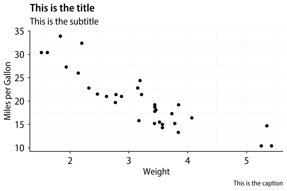

About
Myriad Pro-based theme for ggplot, providing theme_myriad_semi(), theme_myriad_map() and theme_myriad_nymap(). All based on Myriad Pro SemiCondensed face, with Myriad Pro Condensed also available for labels inside the plot area.
Note that this repo does not include the Myriad font files (the .otf files), which are owned by Adobe. You may already have them installed on your computer, or they may have come bundled with your copy of Acrobat Reader or other Adobe software.
Usage
When creating PDFs, use with showtext.
library(showtext)
showtext_opts(dpi = 300)
showtext_auto()
library(myriad)
# Semi variant
import_myriad_semi()
# Condensed for in-graph text
import_myriad_condensed()
# ggplot theme
theme_set(theme_myriad_semi())Basic Test
p <- ggplot(mtcars,
aes(x = wt, y = mpg)) +
geom_point() +
labs(x = "Weight", y = "Miles per Gallon",
title = "This is the title", subtitle = "This is the subtitle",
caption = "This is the caption")
p
With labels (using Myriad Pro Condensed)
out <- mtcars |>
mutate(car = rownames(mtcars)) |>
as_tibble() |>
ggplot(aes(x = wt, y = mpg, label = car)) +
geom_point() +
geom_text_repel(family = "Myriad Pro Condensed") +
facet_wrap(~ cyl, ncol = 1) +
labs(title = "Title",
subtitle = "Subtitle")
out
#> Warning: ggrepel: 2 unlabeled data points (too many overlaps). Consider
#> increasing max.overlaps